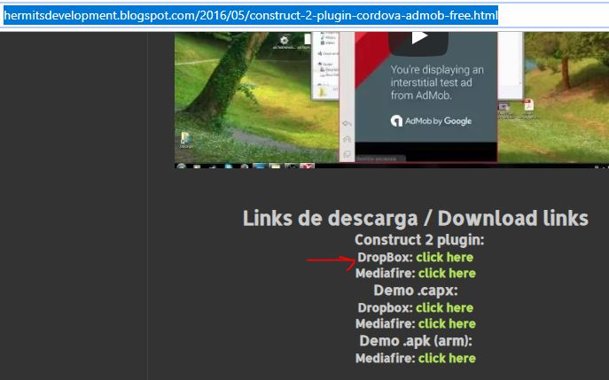
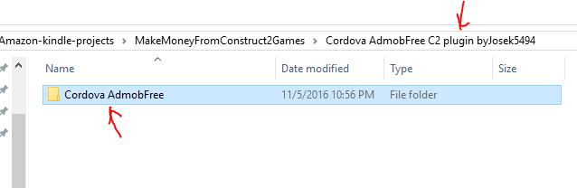
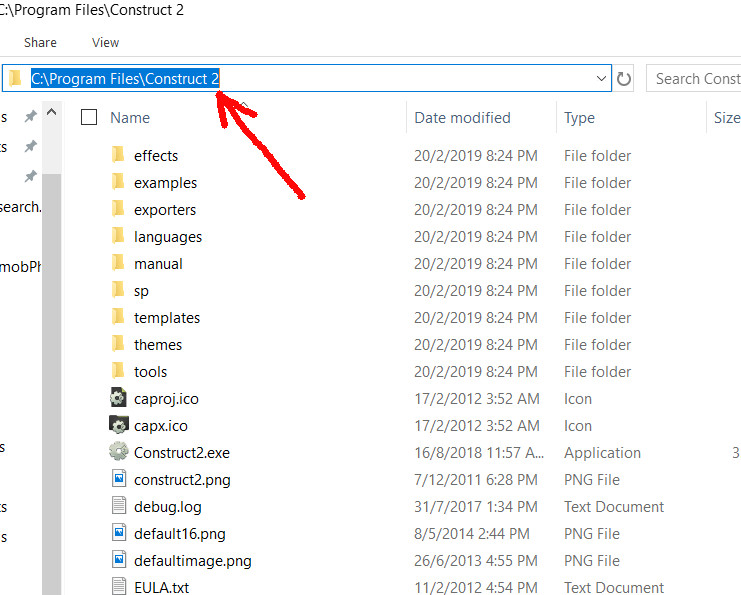
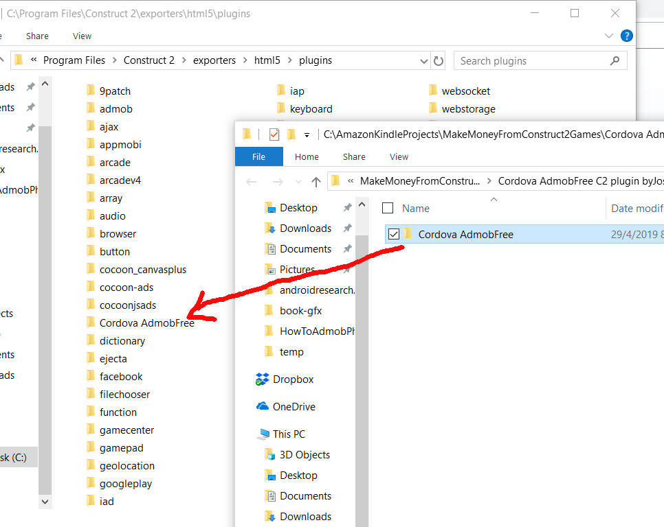

There is already a default AdMob Ads object in the default installation of Construct 2, but, it is not working with the PhoneGap Build which we will be using later, to build an apk file for Android. That is why we need to download another one which can work with PhoneGap build.
We will download the plugin called ‘Cordova AdmobFree C2 plugin by Josek5494. The author is Jose Carlos Hernández. You can download the file from his website:
Just scroll down to the download links as shown in Fig 3-1 below.

From Fig 3-1 above, you will see a few download links,. Just click on the Dropbox link as indicated by the red arrow. I have reproduced the link below:
Just in case Mr Jose’s links are not available in future, I have made a backup copy of the plugin. You can download it here:
github.com/paulchin/Cordova-AdmobFree
The github copy is already unzipped. Just download the entire folder ‘Cordova AdmobFree’.
The downloaded plugin is a file called:
‘Cordova AdmobFree C2 plugin byJosek5494.zip’
Just unzip it and you will find a sub-folder called:
‘Cordova AdmobFree’
See Fig 3-2 below. However, if you downloaded from my github, the file is already unzipped as folder ‘Cordova AdmobFree’

This is this folder which you need to copy to the plugins folder of Construct 2. Next, locate the folder where you installed Construct 2. On my Windows 10 machine, it is installed in:
C:\Program Files\Construct 2
See Fig 3-3 below for the location of the installation of Construct 2.

Next, locate the plugins folder. On my machine it is located in:
C:\Program Files\Construct 2\exporters\html5\plugins
Copy the unzipped ‘Cordova AdmobFree’ folder to the plugins folder. See Fig 3-4 below.

Fig 3-4 above shows the copied Cordova AdmobFree plugin.After doing the copying, you need to restart your Construct 2 so that it can read the contents of the new plugin. With that, we have completed this chapter. In the next chapter, we will be looking at how to use the plugin in our Construct 2 game.